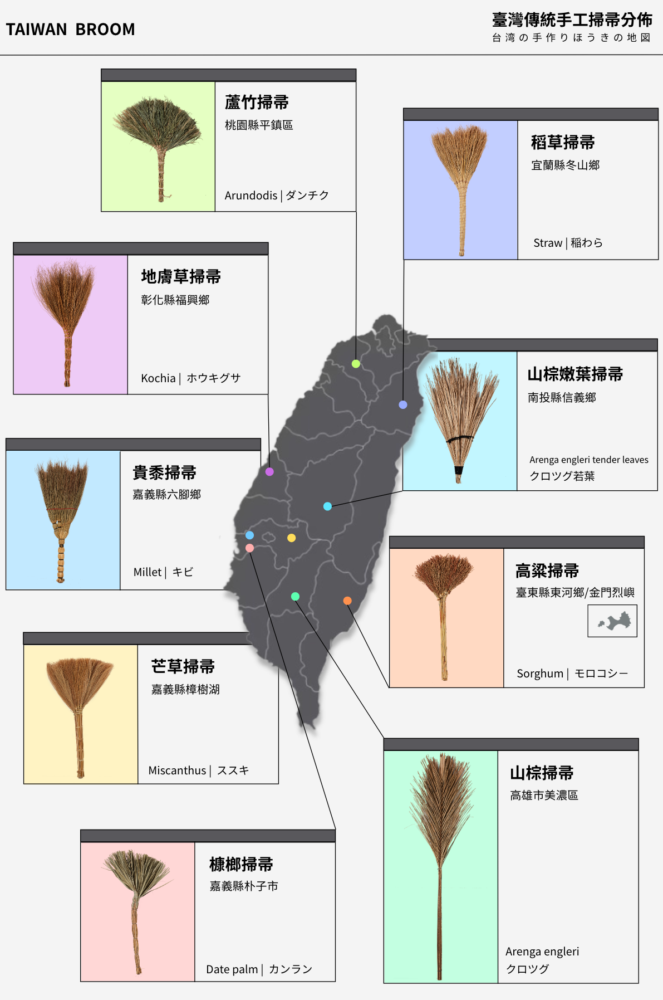
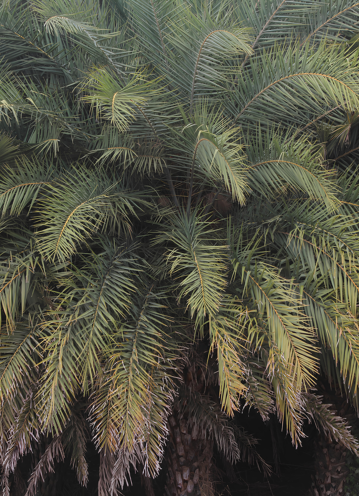
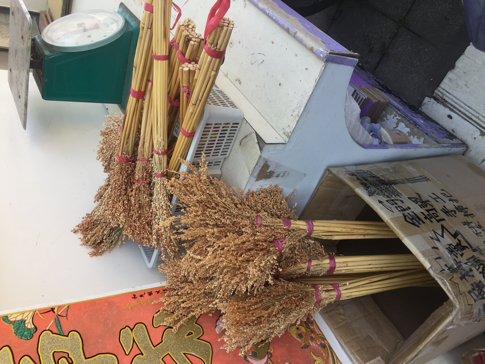
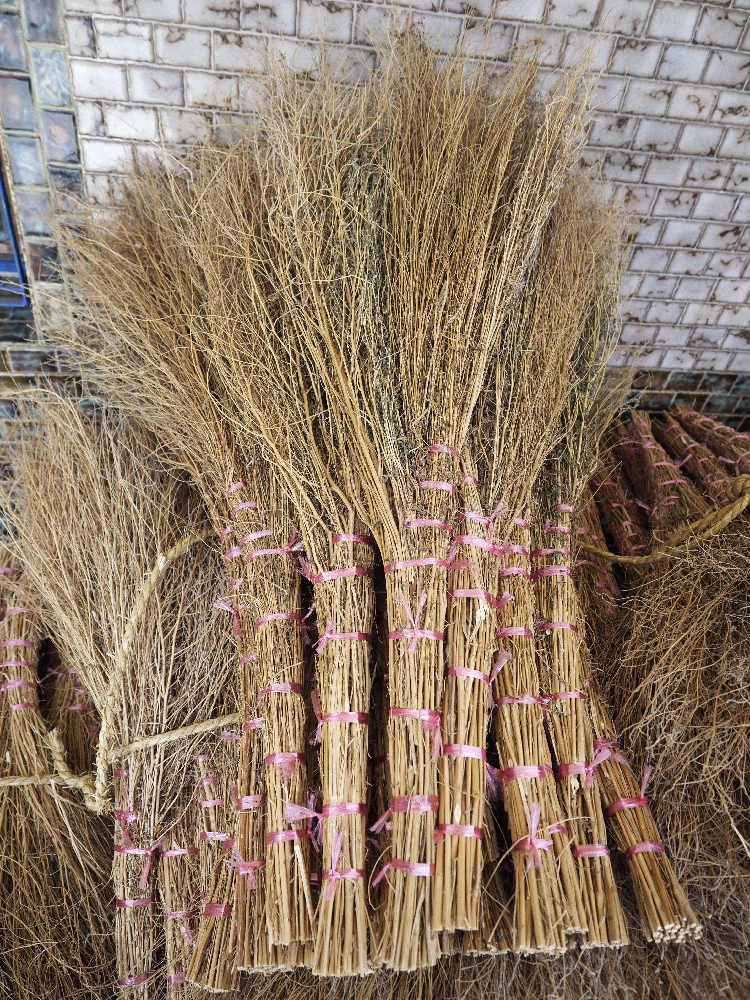
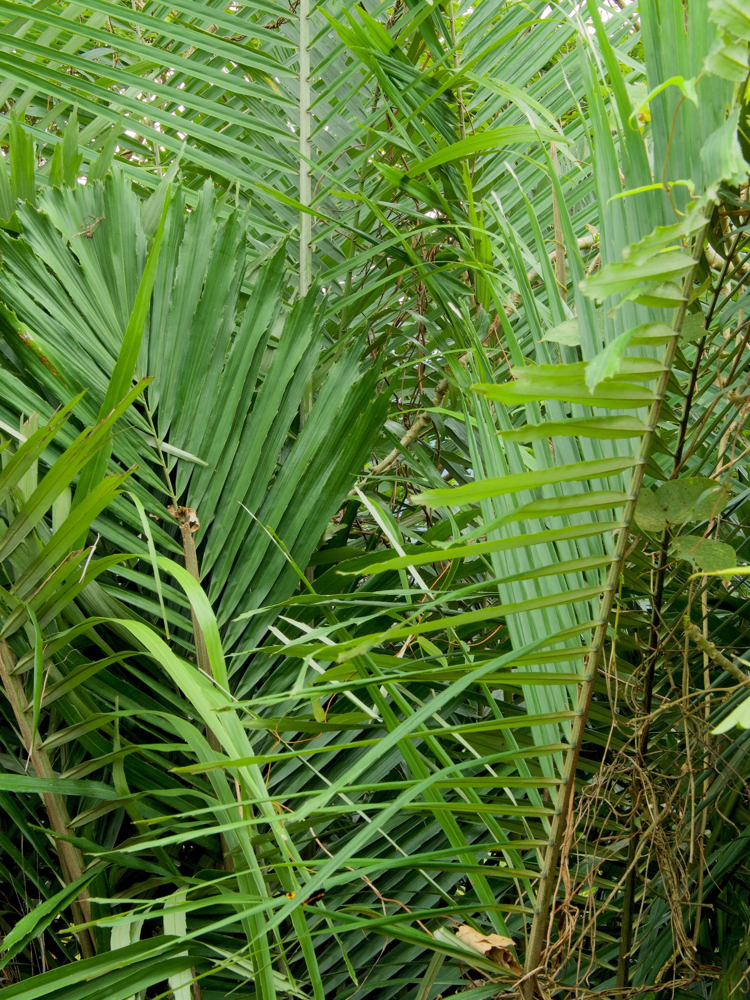
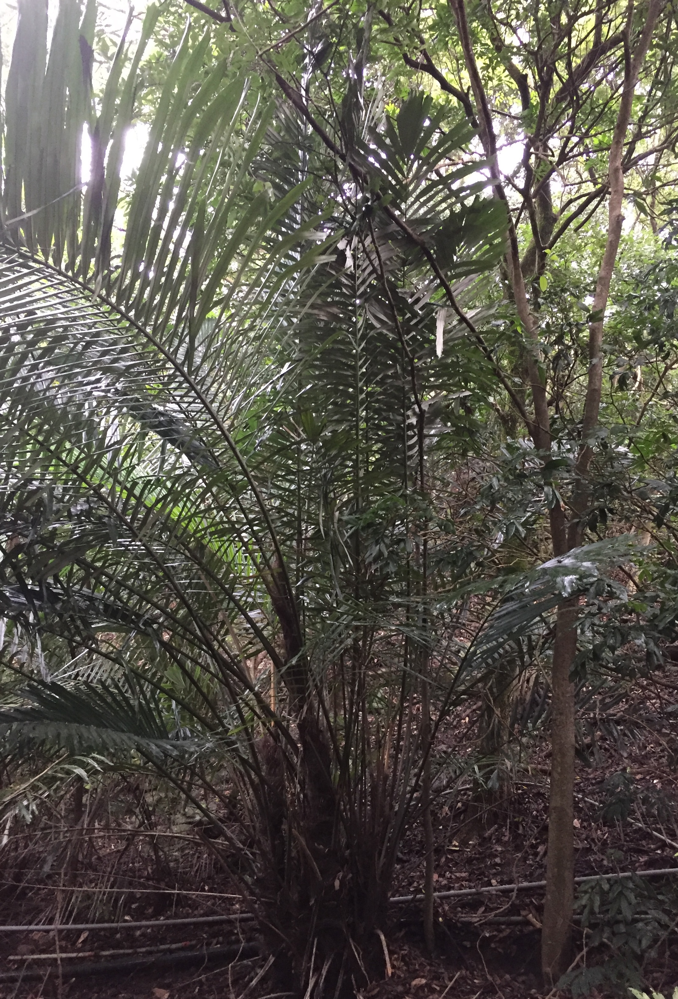
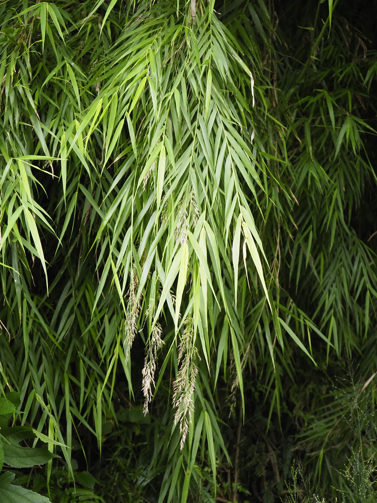
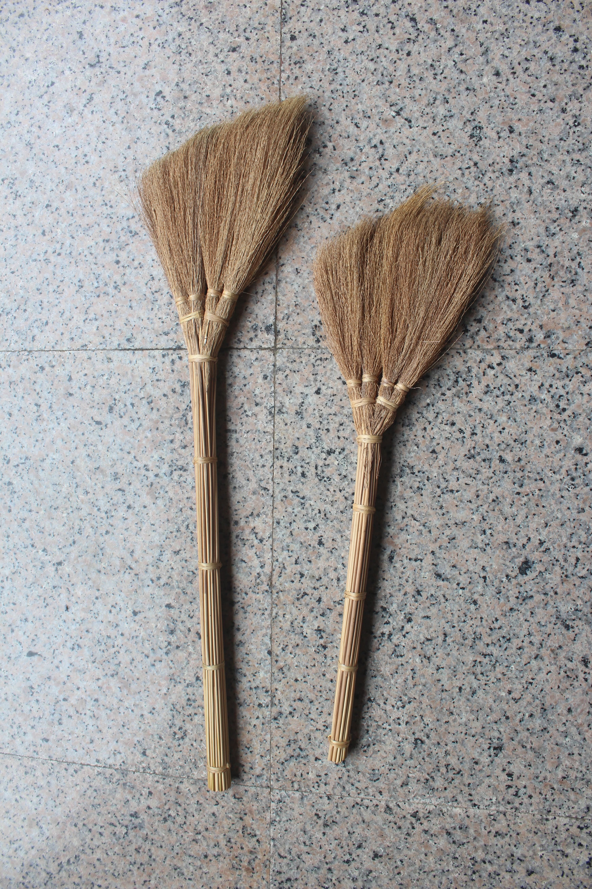

地理分佈 — Distribution
臺灣傳統手工掃帚分佈
清掃是家家戶戶的日常工事，臺灣各地都曾有以天然植物製成的傳統清潔用品，因地緣、歷史與植物分布，使得全臺各地製作出各式各樣不同植物的掃帚，這些天然清潔用具雖然只是生活的「枝微末節」，但它們的「技藝」與「記憶」都值得被認真看待。



No. 01
槺榔掃帚
槺榔是臺灣特有種，據稱可以追溯自冰河時期，臺灣各地都有同音或類似發音的地名，都是因為槺榔這種植物的生長地。這種植物做出來的掃帚，都被視為有法力，可以清除不好的東西。臺灣各地廟內的清潔、神明出巡、神明護體都會用槺榔掃帚。


No. 02
稻草掃帚
臺灣農村文化象徵，全臺各地只要有生產稻米，都會在農閒時用無用的稻桿製作成掃帚。稻草掃帚主要用在曬稻穀的「埕」，不是為了清除乾淨、一塵不染，而是為了將石頭、雜草、稻殼與有價值的稻穀區分開——說是為了清潔，不如說是用於分類。


No. 03
高粱掃帚
高粱掃帚是臺灣金門與東部的特產，只要有高粱產地總會見到，顯示「就地取材」製作生活用品的核心生活法則。有趣的是，東部臺灣原住民愛用色彩鮮艷的紙箱束帶組成掃帚，金門來自中國大陸的移民喜歡採用更常見的塑膠繩，展現兩個族群不同的美學觀。



No. 04
地膚草掃帚
一度為彰化西勢一地從日本時代就存在的主要產業，跟其他大部分只限當地使用的掃帚不同。從書籍出版到來日本展覽不到五年時間，這個村落世代相傳的產業幾乎已經消失，完全被更便宜的人工或工業塑膠掃帚所取代。


No. 05
貴黍掃帚
也是來自日本的掃帚，不只技術甚至連植物都是，據稱是一位來自茨城的商人帶著技術與種子，要將整個掃帚生產基地帶來臺灣，因此訓練了一批專業師傅。這種掃帚技術偏向細緻編織，主要用於榻榻米空間，是一個全然的代工代表。



No. 06
山棕掃帚
山棕廣泛分布於臺灣全島平地至低海拔山區，跟臺灣原住民以及鄉村文化都密切相關。幾乎各民族都會充分利用山棕莖幹上所包覆的黑褐色纖維（棕毛），是臺灣文化中雨具的主要材料；有些地方則直接用巨大的葉柄製成掃帚，用來清潔大而廣的公共空間。



No. 07
山棕嫩葉掃帚
山棕嫩葉掃帚屬於山棕掃帚的子類，師傅不取全植物、成熟植物製作，而是只取剛拔出的嫩葉，是田野調查中無意發現的獨特精緻路線。雖然用同樣植物，嫩葉較難取得，但成果使用更順手，也需要較細緻的手工。目前只發現一位具備各種原住民文化技藝、語言的老師傅在製作。



No. 08
蘆竹掃帚
蘆竹也是臺灣常見植物，全臺各地都有。蘆竹掃帚則是以前東勢庄（現在的桃園平鎮）的主要產業，甚至因此曾被稱為「掃把庄」。雖然這個產業已經沒落，師傅仍堅持讓掃帚送到日本時色澤、型態都要維持「好看」——這才讓我們知道師傅並不是將掃帚當作用過即丟的工具，而是一個本身具有美感的物件。



No. 09
芒草掃帚
到了冬天，臺灣山邊海邊，甚至河川邊都會出現芒草以及衍生出來的芒花觀賞活動，芒草掃帚也是這些芒草產地的重要產物。從漢人、客家人到原住民，這地方的住民都受自然啟發，忍不住動手讓芒草變成家中用品。